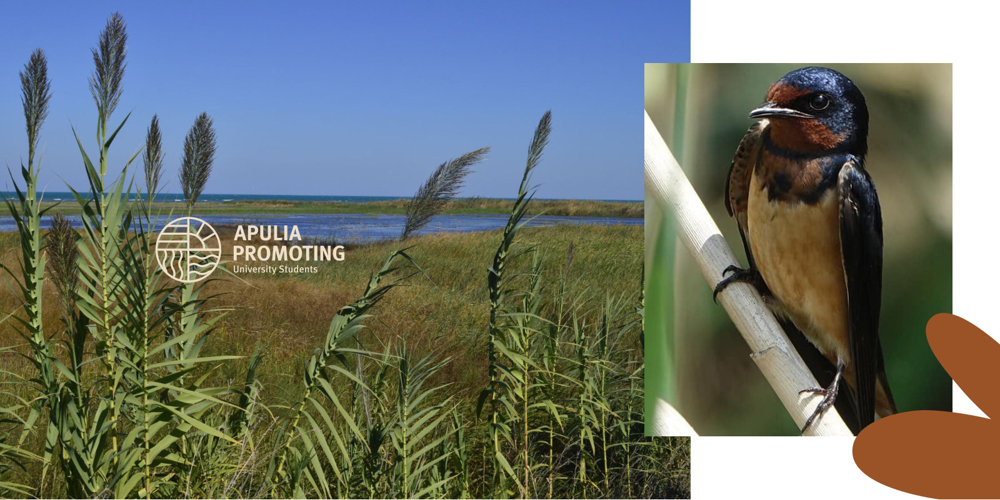
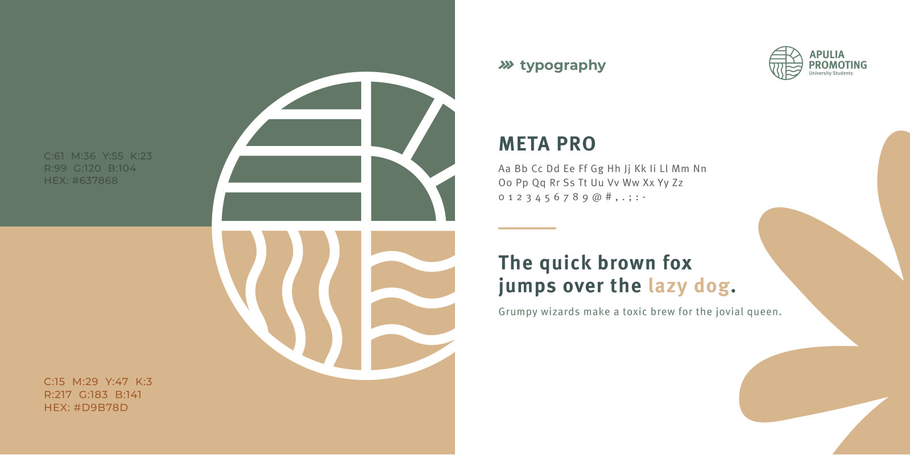
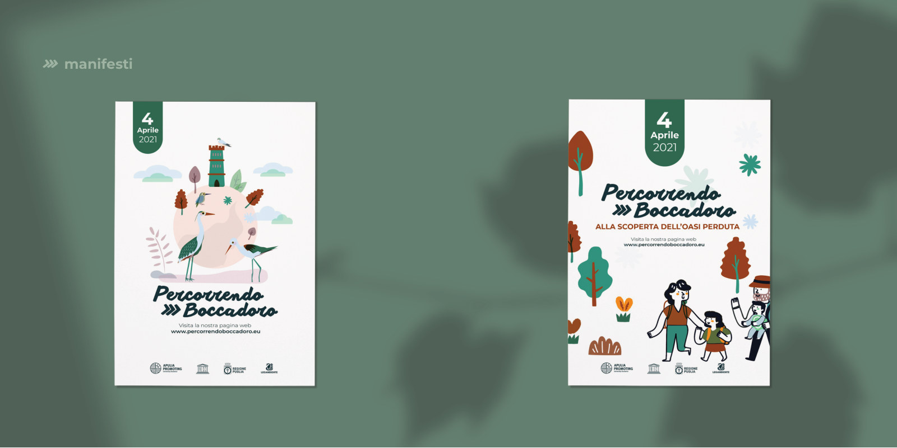
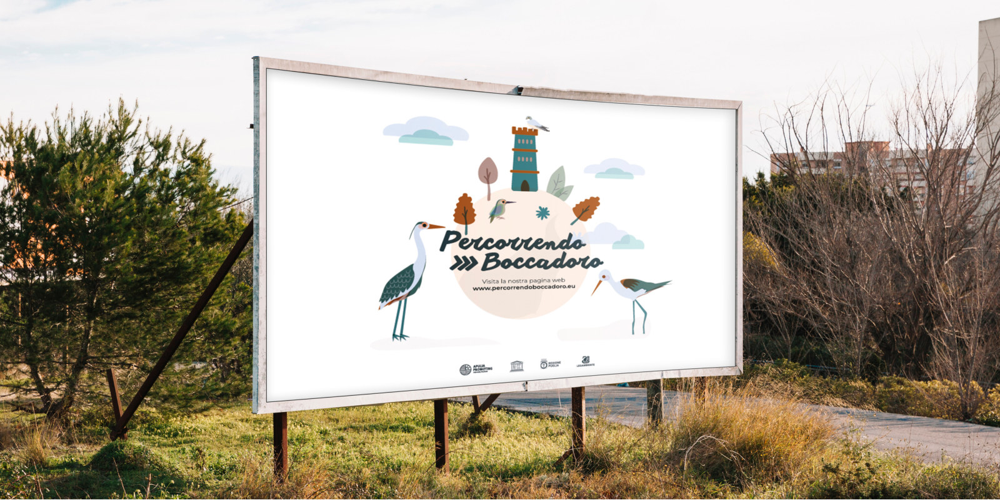
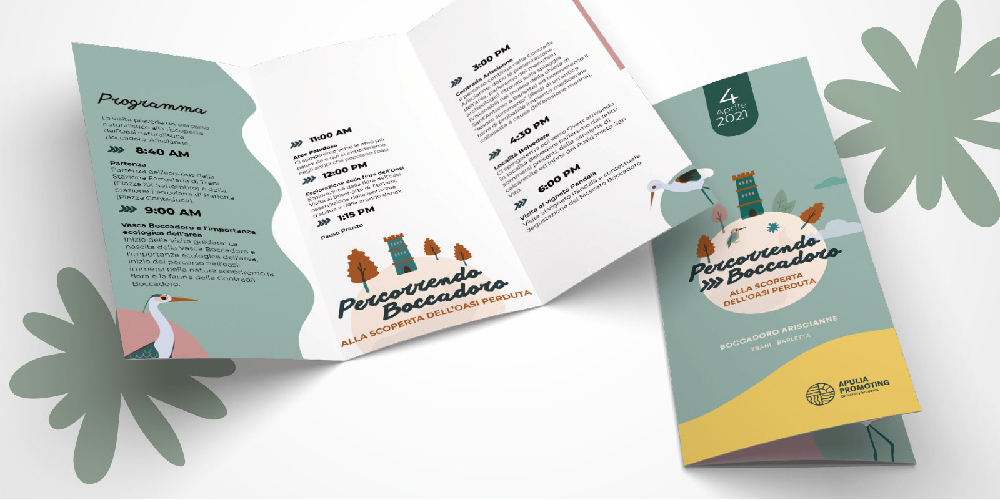
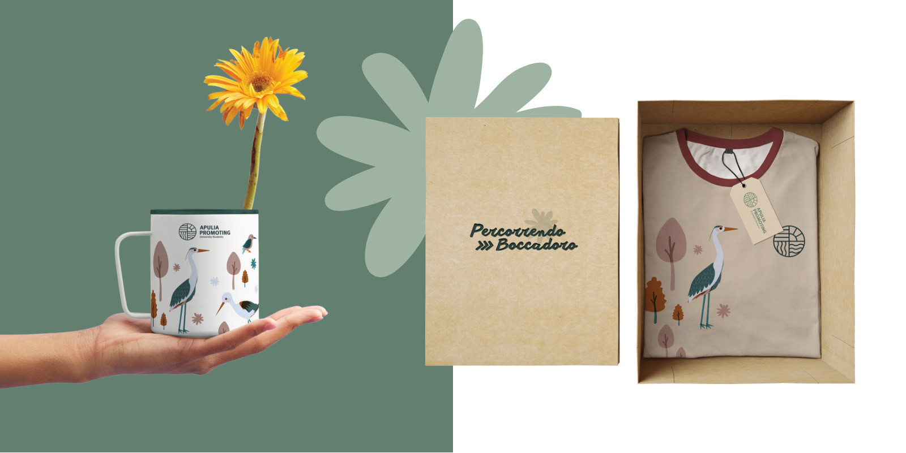
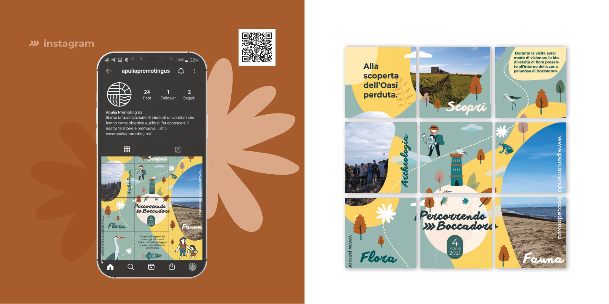
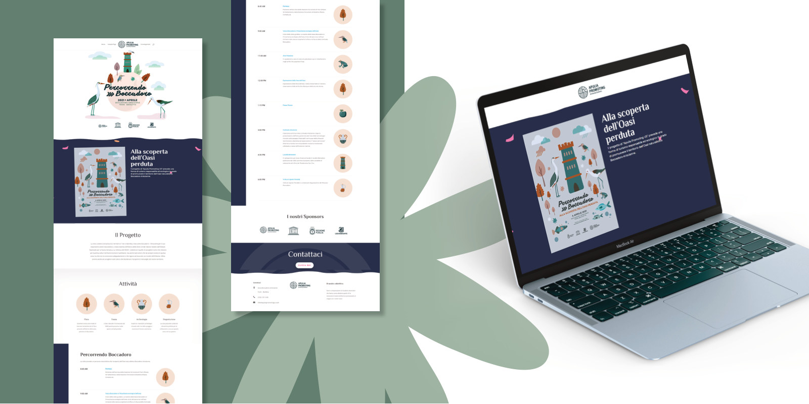
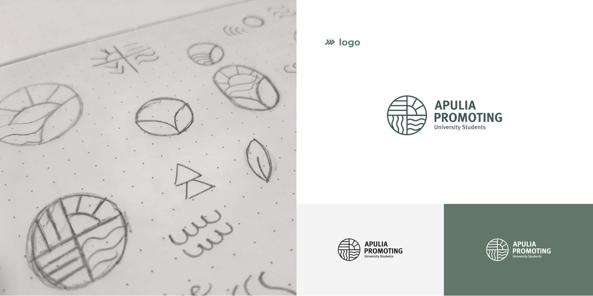

Un luogo può essere vicino,
eppure restare sconosciuto.
Tra Trani e Barletta, la costa custodisce l'oasi di Boccadoro-Ariscianne: un mosaico ecologico unico ricco di specie vegetali, uccelli migratori e sorgenti naturali. Un patrimonio da comprendere prima ancora che da promuovere.
Il brief nasce da una criticità reale: l’area è poco valorizzata e dimenticata da gran parte della comunità locale. Per molti residenti è solo un ricordo dell’infanzia o un paesaggio periferico ignorato dalla quotidianità.
Il progetto risponde creando l’identità di Apulia Promoting US, associazione culturale fondata da studenti universitari, e sviluppando la campagna integrata “Percorrendo Boccadoro”. La comunicazione diventa il ponte vivo tra il territorio e le persone: un invito cordiale a visitarlo, conoscerlo e tutelarlo con consapevolezza.

Biodiversità, canneti, sorgenti d’acqua dolce e saline: il paesaggio autentico e le sue specie sono stati il punto di partenza dell'indagine fotografica e grafica.
Il paesaggio naturale
si fa sintesi e segno geometrico.
Sole, mare, maggese e terra.
Quattro elementi archetipici del territorio pugliese riuniti in un unico cerchio. Il simbolo li traduce in linee rette, curve fluide e ritmi paralleli, creando un segno essenziale, memorabile e altamente scalabile.


Dall'esplorazione a mano libera fino alla vettorializzazione geometrica: la tipografia Meta Pro conferisce autorevolezza editoriale e contemporaneità all'associazione.
Tonalità organiche che evocano
la vegetazione e la terra baciata dal sole.
La palette è un tributo cromatico alla macchia mediterranea: il verde salvia delle canne, il beige maggese e la terracotta delle terre calcaree.
Le tinte naturali comunicano autenticità, serenità ed ecologia. L'abbinamento tra toni caldi e freddi conferisce flessibilità visiva sia nei supporti di divulgazione scientifica sia nella grafica promozionale d’impatto.
La scoperta comincia con un invito:
“Alla scoperta dell’oasi perduta.”
“Percorrendo Boccadoro” traduce l’identità dell’associazione in un’esperienza sensoriale di esplorazione aperta a grandi e bambini.
Uccelli migratori, canne al vento e persone in cammino compongono un racconto visivo illustrato vicino, caldo e accogliente. Il linguaggio illustrato supera la freddezza istituzionale per creare immedesimazione ed entusiasmo.
I due manifesti sviluppano due punti di vista complementari: uno pone in primo piano la ricchezza faunistica dell'oasi; l’altro valorizza l'esperienza attiva di chi intraprende la passeggiata nel territorio.

Il luogo e le persone: due sguardi che convergono verso il medesimo obiettivo, stimolare l'esplorazione responsabile e l'affezione per il territorio.

Un racconto coordinato che
accompagna il visitatore in ogni momento.
Dalla segnaletica ai pieghevoli informativi, dalla presenza social sui canali dell'associazione fino al merchandising sostenibile: ogni supporto risponde a un momento chiave del percorso dell'utente.

Il pieghevole illustrato funge da mappa da campo: include dettagli sulle specie protette, itinerari pedonali consigliati e buone norme di comportamento nell'oasi.



La proposta web raccoglie la storia dell'iniziativa, fornisce gli aggiornamenti su eventi guidati ed escursioni e permette ai visitatori di condividere le proprie osservazioni naturalistiche.
Sfoglia il manuale di progetto
o scarica il documento completo.
Dalla ricerca preparatoria alle schede tecniche: naviga le tavole principali del progetto nel visualizzatore flipbook interattivo.
Il flipbook permette di consultare rapidamente le tavole salienti dell’identità visiva e della campagna, mantenendo l’esperienza immersiva della pubblicazione stampata originale.
Apulia Promoting US — Manuale & Campagna

Dalla ricerca sul campo
alle applicazioni finali.
Il documento originale completo raccoglie il brief iniziale, la ricerca storico-territoriale su Boccadoro-Ariscianne, l'analisi dei competitor, gli schizzi preparatori a mano e il piano di comunicazione integrata.